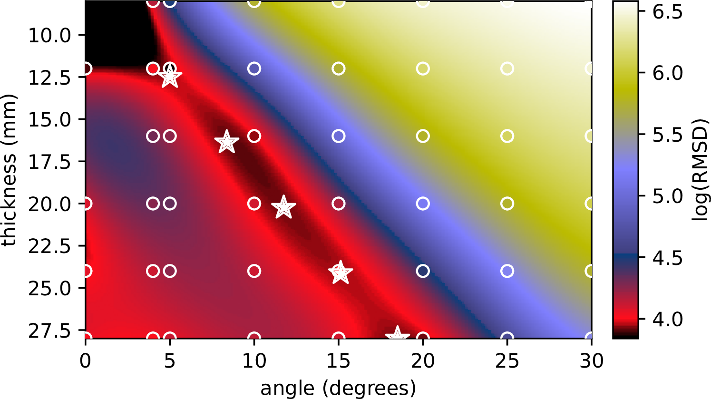

Sam Coveney
2021-present Post-processing methods for cardiac Diffusion Tensor Imaging Biomedical Imaging Department · University of Leeds
2017-2021 Bayesian inference for cardiac digital twins of electrophysiology Department of Computer Science · University of Sheffield
2015-2017 Emulation (surrogate modeling) of time-expensive simulators Department of Physics and Astronomy · University of Sheffield
Oct 2011 - Feb 2015 Theoretical Physics PhD | GPU simulations of polymer films Department of Physics and Astronomy · University of Sheffield
Emulators / Surrogate Models
Simulator: input parameters $\rightarrow$ outputs
Emulator (fast) $\approx$ Simulator (slow)
Use Emulator to fit parameters, do inference, etc.
Relevance: parameter estimation; acquisition design
Emulators of cardiac action potential
INPUTS: parameters; OUTPUTS: action potential
Find most implausible features given real data


Emulators of cardiac restitution curves
INPUTS: parameters; OUTPUTS: restitution curves
Model principle components to reduce dimensionality


Bayesian Calibration with emulators
Obtain posterior distribution of parameters given data
(without having to run more simulations)


Use emulators to discover new protocols
Investigate parameter identifiability with emulators
Improve parameter estimation with better data designs


Random fields on Manifolds
Modeling and interpolation on left atrial models
Relevance: maths + stats + coding
Probabilistic Interpolation on manifolds

Uncertain observations on left atrium
Local Activation Time (LAT)
(time of arrival of electrical wavefront)

Posterior distribution of Local Activation Time


Posterior distrib. of function + gradient
Spatial priors for Bayesian parameter estimation

Cardiac diffusion tensor imaging
Investigating cardiac tissue structure with CDTI

Relevance: MRI; analysis pipelines
My CDTI roles
I write post-processing tools (registration, fitting, etc.)
These tools are used by many people at Uni of Leeds.
Diffusion Tensor Imaging (DTI) maths
Model observed signal $y_i$ as:
$b_i$ (scalar): diffusion gradient strength
$\mathbf{g_i}$: (vector) : diffusion gradient direction
$\mathbf{D}$: ($3 \times 3$ tensor) : diffusion tensor
Task: estimate $\mathbf{D}$ (and $S_0$)
Short-axis cardiac DTI
Robust fitting for outlier detection
Replace sum-of-squares with M-estimator
Less sensitive to outlier signals
Comparing fitting methods
Diffusion Kurtosis Imaging (DKI) maths
$\mathbf{q}$: scaled diffusion gradient vector
$\mathbf{D}$: diffusion tensor | $\mathbf{W}$: kurtosis tensor
Robust and Constrained fitting methods
Robust and Constrained fitting methods

RCWLS recovers expected kurtosis properties
Uncertainty Maps of Diffusion Measures

Uncertainty Weighted Summary Statistics in CDTI
Acquisition design for CDTI
Optimal setup for ZOnally Oblique Multislice
